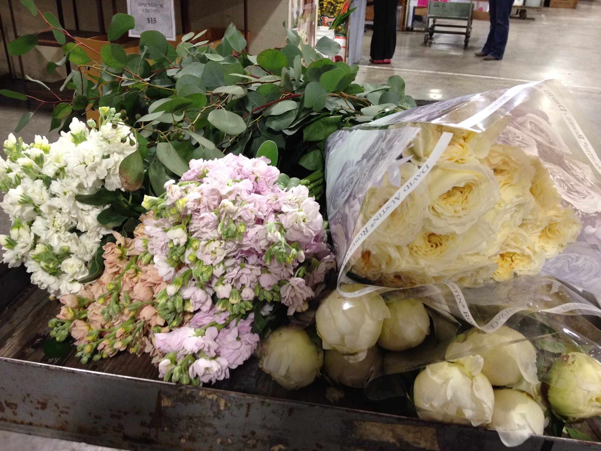

Past Events
Please see our past events!
-
Guest speaker: Jane Love - Senior Social Worker
Jane took two years off to take care of her kids from managing an independent social working agency located in Fremont. She clients are men and women who suffer from mental illness and homelessness. In our latest event, she facilitated a group session about the stigma and stereotypes of homelessness. She ended the session with 'We cannot avoid what we know. What can we do about it, as a community and as an individual?'
